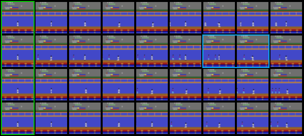
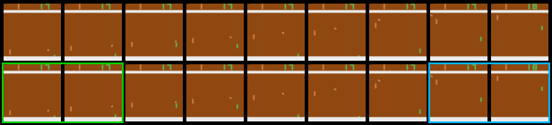
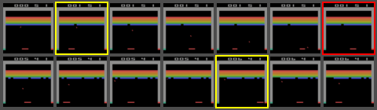
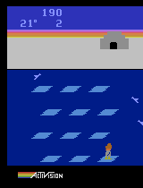

Transformers are Sample-Efficient World Models
原论文摘要 · English Abstract
Deep reinforcement learning agents are notoriously sample inefficient, which considerably limits their application to real-world problems. Recently, many model-based methods have been designed to address this issue, with learning in the imagination of a world model being one of the most prominent approaches. However, while virtually unlimited interaction with a simulated environment sounds appealing, the world model has to be accurate over extended periods of time. Motivated by the success of Transformers in sequence modeling tasks, we introduce IRIS, a data-efficient agent that learns in a world model composed of a discrete autoencoder and an autoregressive Transformer. With the equivalent of only two hours of gameplay in the Atari 100k benchmark, IRIS achieves a mean human normalized score of 1.046, and outperforms humans on 10 out of 26 games, setting a new state of the art for methods without lookahead search. To foster future research on Transformers and world models for sample-efficient reinforcement learning, we release our code and models at https://github.com/eloialonso/iris.
离散自编码器把帧压成 token
64×64 帧 → K=16 个 token，词表 N=512
Transformer 自回归续写帧-动作序列
10 层、D=256，L=20 步、总长 340 的交错序列
从真实帧出发想象展开 H=20 步
自回归预测未来，预测到终止即停
Actor-Critic 在想象中学行为
λ-回报、REINFORCE 加价值基线
真实环境执行、经验回写再训模型
600 epoch，每 epoch 收集 200 步
问题与动机
深度强化学习最出名的短板就是样本效率：DreamerV2 在 Atari 上要 2 亿帧、相当于数月游戏时间，OpenAI Five 在 Dota 2 上更是用了数千年。真实世界里的环境没法像模拟器那样加速，交互还有成本与安全代价，所以样本效率是把深度强化学习从游戏搬到现实的必要条件。
“在想象中学习”是一条很有希望的路线：先学一个世界模型，再让策略在模型里无限次地试错，真实交互只用来改进模型。Ha & Schmidhuber（2018）在简单视觉环境里验证了这个想法，SimPLe 把它带到 Atari 100k，DreamerV2 则第一个在 Atari 上达到人类水平。但 DreamerV2 是在 2 亿帧的设定下开发和评估的，离样本高效还很远——问题于是变成：能不能设计一种世界模型，只用很少样本就把视觉复杂、部分可观测的环境模拟得足够准。
与此同时，Transformer 在语言建模上大获成功：GPT 家族证明，自监督目标加高维信号加注意力，是极强的序列建模组合。世界模型要做的事本质上也是序列建模——给定历史观测与动作，预测未来。障碍在于图像没有现成的词表：把像素直接当 token 会让自注意力随序列长度二次爆炸，算不动。VQGAN 与 DALL-E 给出了解法：先用离散自编码器把图像压成少量 token，再让 Transformer 在 token 上自回归。IRIS 就是把这套生成式建模的配方搬进强化学习的世界模型。
- 样本效率是部署瓶颈：DreamerV2 需 2 亿帧，真实环境无法加速交互。
- 想象中学习的前提是世界模型长期准确，否则策略学到的全是模型幻觉。
- 像素直接当 token 会因自注意力二次复杂度而不可行，必须先离散化。
核心思想
IRIS 的核心主张可以一句话概括：把动力学学习重铸为序列建模问题。自编码器为每帧图像发明一门“内在言语”（inner speech）——一串离散 token；Transformer 像语言模型续写句子一样续写这门语言，从而模拟环境。论文标题里的 IRIS 全称就是 Imagination with auto-Regression over an Inner Speech。
整个智能体由三个标准组件循环驱动：collect_experience（用当前策略在真实环境里收集经验）、update_world_model（改进奖励、回合结束与下一观测的预测）、update_behavior（在想象中改进策略与价值函数）。策略只在想象 MDP 里学习，真实经验只用来学动力学——这是从 Ha & Schmidhuber 到 Dreamer 一脉相承的框架。
与上一篇 DreamerV2 的关系值得单独点明：IRIS 继承了想象学习的范式，甚至原样复用了 DreamerV2 的 actor-critic 学习目标与超参数；但它把世界模型的核心——循环状态空间模型（RSSM）——整个替换为离散自编码器加 GPT 式 Transformer。换句话说，IRIS 不是在 DreamerV2 上修修补补，而是把“世界模型应该长什么样”这个根本问题换了一个答案。
- 动力学学习 = 图像 token 的语言建模：自编码器造语言，Transformer 续写语言。
- 三组件循环：收集经验 → 更新世界模型 → 在想象中更新行为。
- 继承 DreamerV2 的想象学习范式与行为学习目标，替换的是世界模型本身。

模型结构与关键机制
离散自编码器 $(E, D)$ 负责在图像与 token 之间翻译。编码器 $E: \mathbb{R}^{h\times w\times 3} \to \{1,\dots,N\}^K$ 把 $64\times 64$ 的帧变成 $K=16$ 个 token，词表大小 $N=512$、嵌入维 $d=512$；具体做法是 CNN 先输出 $y_t \in \mathbb{R}^{K\times d}$，再对每个位置取最近邻嵌入的下标，即 $z_t^k = \arg\min_i \|y_t^k - e_i\|_2$，其中 $\mathcal{E}=\{e_i\}_{i=1}^{N}$ 是可学习的嵌入表，$e_i$ 是第 $i$ 个词表项对应的 $d$ 维向量。解码器 $D$ 是 CNN，把 $K$ 个 token 还原成图像。训练用等权重的三项损失之和：
$$\mathcal{L}(E,D,\mathcal{E}) = \|x - D(z)\|_1 + \|\mathrm{sg}(E(x)) - \mathcal{E}(z)\|_2^2 + \|\mathrm{sg}(\mathcal{E}(z)) - E(x)\|_2^2 + \mathcal{L}_{\mathrm{perceptual}}(x, D(z))$$
式中第一项是 $L_1$ 重建损失，中间两项是承诺损失（$\mathrm{sg}(\cdot)$ 是 stop-gradient 算子，阻止梯度流过被截断的一侧，让编码输出与嵌入表互相靠近），最后一项是感知损失；梯度通过直通估计器（straight-through estimator）传过不可微的最近邻量化。值得注意的是，作者去掉了 VQGAN 的判别器，等于用了一个加感知损失的 VQ-VAE。
Transformer $G$ 是世界模型的动力学核心，基于 minGPT 实现。它吃进交错的帧 token 与动作 token 序列 $(z_0^1,\dots,z_0^K,a_0,z_1^1,\dots,z_1^K,a_1,\dots,z_t^1,\dots,z_t^K,a_t)$，训练时取 $L=20$ 步的片段，序列总长 $L(K+1)=340$；结构是 10 层 GPT-2 式 block，嵌入维 $D=256$、4 个注意力头，三处 dropout 均为 0.1。在每个时间步 $t$，它建模三个分布：转移 $\hat{z}_{t+1} \sim p_G(\hat{z}_{t+1} \mid z_{\leq t}, a_{\leq t})$、奖励 $\hat{r}_t \sim p_G(\hat{r}_t \mid z_{\leq t}, a_{\leq t})$、回合终止 $\hat{d}_t \sim p_G(\hat{d}_t \mid z_{\leq t}, a_{\leq t})$，其中 $z_{\leq t}$ 表示到 $t$ 为止的全部历史 token，$a_{\leq t}$ 是历史动作。
一个关键细节是“token 级自回归”：转移分布进一步分解为 $\hat{z}_{t+1}^k \sim p_G(\hat{z}_{t+1}^k \mid z_{\leq t}, a_{\leq t}, z_{t+1}^{ 训练分 600 个 epoch，每 epoch 在真实环境收集 200 步（500 个收集 epoch 共 100k 步），世界模型与行为学习各做 200 个训练步。三个组件按顺序启动：自编码器从第 5 个 epoch 开始训，Transformer 从第 25 个 epoch 开始，actor-critic 从第 50 个 epoch 开始——先有可用的 token 语言，再学动力学，最后才在想象里练策略。优化器是 Adam，学习率 $10^{-4}$，$\beta_1=0.9$、$\beta_2=0.999$，梯度裁剪范数 10.0。 想象 rollout 的流程是：从经验池采样一个真实帧 $x_0$，编码为 $z_0$ 再解码为 $\hat{x}_0$；策略在重建帧上采样动作 $a_t \sim \pi(a_t \mid \hat{x}_{\leq t})$；Transformer 自回归地预测下一帧 token $\hat{z}_{t+1}$、奖励 $\hat{r}_t$ 与终止 $\hat{d}_t$，解码得到 $\hat{x}_{t+1}=D(\hat{z}_{t+1})$；如此展开 $H=20$ 步（想象 horizon），预测到回合结束就提前停止。actor-critic 本身是 CNN 加 LSTM（隐状态 512 维），想象开始前先用前 20 帧做 burn-in 来初始化 LSTM 隐状态。 行为学习直接沿用 DreamerV2 的目标。价值网络 $V$ 回归 λ-回报： $$\Lambda_t = \hat{r}_t + \gamma(1-\hat{d}_t)\big[(1-\lambda)V(\hat{x}_{t+1}) + \lambda\Lambda_{t+1}\big],\quad t < H;\qquad \Lambda_H = V(\hat{x}_H)$$ 其中 $\gamma=0.995$ 是折扣因子，$\lambda=0.95$ 控制多步回报与价值估计之间的偏差-方差权衡，$\hat{d}_t \in \{0,1\}$ 是预测的回合终止。价值损失是 $\mathcal{L}_V = \mathbb{E}_\pi[\sum_{t=0}^{H-1}(V(\hat{x}_t) - \mathrm{sg}(\Lambda_t))^2]$，即价值估计与 stop-gradient 后的 λ-回报之间的平方差。策略用 REINFORCE 训练，以价值为基线降低方差，再加熵正则保持探索：$\mathcal{L}_\pi = -\mathbb{E}_\pi[\sum_{t=0}^{H-1}\log\pi(a_t \mid \hat{x}_{\leq t})\,\mathrm{sg}(\Lambda_t - V(\hat{x}_t)) + \eta\mathcal{H}(\pi(a_t \mid \hat{x}_{\leq t}))]$，熵系数 $\eta=0.001$。一个容易忽略的细节：真实环境里收集经验时，帧也要先经过自编码器再喂给策略（$\hat{x}_t = D(E(x_t))$），这样策略在真实与想象中看到的输入分布才一致。  评估用 Atari 100k 基准：26 个 Atari 游戏，每个只给 100k 个动作，约等于 2 小时人类游戏时间；而不受限的 Atari 智能体通常训练 5000 万步，是 500 倍的经验。度量是人类归一化分数 $\frac{\mathrm{score}_{agent}-\mathrm{score}_{random}}{\mathrm{score}_{human}-\mathrm{score}_{random}}$，随机策略为 0、人类为 1。基线分两组：无前瞻搜索的 SimPLe、CURL、DrQ、SPR，以及带 MCTS 前瞻搜索的 MuZero 与 EfficientZero；IRIS 每个游戏跑 5 个种子，取训练末期 100 回合的平均。 只用 2 小时等效经验，IRIS 达到平均人类归一化分数 1.046、26 个游戏里 10 个超人类、IQM 0.501、最优性差距 0.512；相对最强无搜索基线 SPR（均值 0.616）分别提升约 70%、49%、11% 与 67%，成为无前瞻搜索方法的新 SOTA。它甚至超过了 MuZero（均值 0.562），不过 MuZero 本来就不是为样本高效 regime 设计的；而带搜索的 EfficientZero（1.943）仍然大幅领先。性能画像显示，IRIS 在后 50% 的游戏上随机占优于所有基线，且对每个基线的改进概率都大于 0.5。 定性结果同样重要，因为策略完全活在想象里，世界模型的质量就是一切：KungFuMaster 里同一初始帧能想象出不同数量与种类的敌人，还能复现“敌人被击中后消失”的机制；Pong 只训练 120 局后就能像素级完美地预测球轨与双方球拍移动，甚至赢下一分后记分板的更新；Breakout 里模型知道打掉砖会得分、砖会消失，Gopher 里知道堵住洞口或消灭敌人会得分，漏接小球或让敌人碰到胡萝卜则会终结回合。这些例子说明模型学到的不只是像素纹理，而是游戏规则本身。 注：人类水平 = 1。 均值 1.046 的意义在于：IRIS 是第一个在 Atari 100k 上平均超过人类水平的无前瞻搜索方法，比最强的同类基线 SPR（0.616）高出约 70%，10 个游戏超人类也大幅领先 SPR 的 6 个。但中位数只有 0.289，说明成绩高度依赖少数游戏——Assault（1524.4 分）、Boxing（70.1 分）等拉高了均值，而 Alien（420.0 分，远低于人类 7127.7 分）、BankHeist（53.1 分）等仍很弱，分布极不均匀，这正是论文同时报告 IQM（0.501）与性能画像的原因。 消融实验最能说明方法的瓶颈所在：把每帧 token 数从 16 增至 64 后，Asterix 提升 121%、BankHeist 提升 432%，说明视觉保真度确实是很多游戏的瓶颈；但 Alien 只提升 36%，说明有些游戏的瓶颈不在重建质量，而在探索或强化学习本身。同样，把环境步数从 100k 放宽到 10M 后均值升至 7.488、超人类游戏增至 15 个，证明架构本身可以扩展，但代价是 token 越多、序列越长，注意力开销二次增长。 数字的水分主要在三处。第一，与 EfficientZero（均值 1.943、14 个超人类游戏）相比仍有明显差距，但后者用了 MCTS 前瞻搜索，计算与代码复杂度不在一个量级，论文把“有/无前瞻搜索”分开比较是诚实的。第二，中位数 0.289 与其他方法的置信区间重叠，5 个种子、每游戏 100 回合的评估下，单游戏数字波动不小。第三，训练成本很高：每个环境在 A100 上平均要 3.5 天，而 SPR 只要 4.6 小时（P100），样本效率的胜利是以墙钟时间换来的。  最值得记住的局限是作者自己提出的“双重探索问题”。智能体要先在真实环境里偶然发现一个新机制，世界模型才能把它内化；然后策略还要在想象中重新发现并利用它。Frostbite 里离开第一关需要一长串低概率动作——先造好冰屋，再从屏幕底部返回——世界模型很难从经验里学到它，于是策略在想象中永远见不到后面的关卡；Krull 的关卡切换频繁得多，覆盖充分，IRIS 反而在那里创了新 SOTA。只要关卡切换不依赖低概率事件，这个问题就不构成障碍，但它揭示了想象学习的根本脆弱性。 第二个局限是视觉保真度与计算的权衡。16 个 token 编码一帧时，Alien 里的玩家经常被抹掉、颜色错乱、奖励位置放错；把 token 数提到 64 后，Asterix 提升 121%、BankHeist 提升 432%，但 Alien 只提升 36%——说明有些游戏的瓶颈在探索或强化学习本身，而不在重建质量。而且 token 越多序列越长，注意力开销二次增长，这是一个硬约束。 其余争议点还包括：中位数只有 0.289，且与其他方法的置信区间重叠，均值很大程度上由少数游戏拉动；训练成本很高，每个环境在 A100 上平均要 3.5 天，而 SPR 只要 4.6 小时（P100），样本效率的胜利是以墙钟时间换来的；评估只覆盖 Atari，未验证更复杂或真实的视觉环境；策略只看重建帧，没有利用世界模型的内部表征，作者自己也在结论里承认这是未竟之处。  IRIS 的重要性首先在路线层面：它证明了“世界模型 = 序列模型”是一条走得通的路。把 VQ 式离散化加自回归 Transformer 做成世界模型的配方，此后被反复沿用与改进——从更大规模的离散 token 世界模型，到把 Transformer 动力学与 Dreamer 式想象结合的各种变体。IRIS 之前，Transformer 进强化学习多半是当策略或当离线轨迹模型；IRIS 之后，用 Transformer 当世界模型成了主流选项之一。 其次是方法论遗产。论文严格采用了 Agarwal et al.（2021）的统计实践：除了均值，同时报告中位数、IQM、最优性差距、性能画像与改进概率，并用分层自助法给出置信区间——这套做法此后成为样本高效强化学习论文的标配。代码与模型全部开源，也让这条路线可以被直接复现与扩展。 最后，它的局限本身变成了后续研究的议程：token 数量与计算的权衡、双重探索问题、重建帧与潜变量策略输入之争——这些问题在 DreamerV3 的规模化、扩散式世界模型、以及把世界模型与搜索结合的工作里被逐一回应。读 IRIS 时看到的每一个“如果……就好了”，几乎都对应着后来的一篇论文。 思考题 1：为什么 IRIS 要把图像先离散化成 token，而不是直接对像素或连续潜变量做自回归建模？这样做付出了什么代价？ 答案是离散化同时解决了两个问题。第一，计算可行性：Transformer 的自注意力随序列长度二次增长，若把 $64\times 64$ 像素直接当 token，单帧就有 4096 个 token，$L=20$ 步的序列长达数万，不可训练；离散自编码器把一帧压成 $K=16$ 个 token，20 步序列只有 $L(K+1)=340$ 个 token。第二，建模友好性：Transformer 在离散 token 序列上已被语言模型证明极其成功，交叉熵训练目标与 token 级采样天然适配；连续潜变量则需要额外的密度建模假设。代价是量化会丢细节：16 个 token 时 Alien 里的玩家常被抹掉、颜色错乱，64 个 token 后 Asterix 提升 121%、BankHeist 提升 432%，这正是离散化带来的信息瓶颈的直接证据。 思考题 2：IRIS 的策略只观测世界模型解码出的重建帧 $\hat{x}_t$，而不使用世界模型的内部表征（如 Transformer 的隐状态或 token 嵌入），这个设计选择有什么利弊？ 判断：这是 IRIS 最值得商榷的设计选择之一，利弊都很明确。好处是策略与世界模型解耦、输入就是人眼可理解的图像，训练稳定且可沿用 DreamerV2 的成熟目标；坏处是重建误差会进入策略的观测，世界模型学错的细节（比如漏掉一个敌人）会直接变成策略的盲区，而且解码-编码的往返是纯开销。论文作者自己在结论里承认，策略“本可以利用世界模型的内部表征”，这正是后续工作（如直接在潜变量上训练策略的 Dreamer 系列、以及用 Transformer 隐状态做策略输入的方法）改进的方向。 思考题 3：与 DreamerV2 的循环状态空间模型（RSSM）相比，IRIS 的 Transformer 世界模型在长期预测能力与计算代价上各有什么优劣？论文的实验结果支持哪种判断？ 判断：两者各有胜场，IRIS 的胜场在长程依赖与样本效率，RSSM 的胜场在计算效率与紧凑表征。自注意力让 Transformer 可以直接跨越任意时间距离取用历史信息，不像循环网络那样把全部历史压进一个固定维度的隐状态，这对需要记住远处事件的游戏很关键；同时自回归的 token 级预测能表达多模态的未来（同一初始帧可以想象出不同敌人的 KungFuMaster 例子）。代价是序列长度随 $K$ 与 $L$ 线性增长、注意力代价二次增长，所以 IRIS 不得不把每帧压到 16 个 token 并只用 $L=20$ 的上下文；RSSM 的循环状态则与序列长度无关，推理时单步更新更便宜。实证上 IRIS 在 Atari 100k 的均值 1.046 大幅超过 DreamerV2 在 2 亿帧下的同类表现，但这更多是样本效率 regime 下的胜利，而非对 RSSM 的全面取代。 这是本系列第 6 篇精读，上一篇是 DreamerV2（Hafner et al., 2021）。IRIS 直接继承了 DreamerV2 开创的“在想象中学习”范式——策略只在世界模型里训练、真实交互只用来学动力学，甚至原样复用了 DreamerV2 的 actor-critic 目标与超参数（λ-回报、REINFORCE 加价值基线、熵正则）。分歧在世界模型本身：DreamerV2 用卷积自编码器加循环状态空间模型（RSSM），把动力学装进一个循环的离散潜变量里；IRIS 则把 RSSM 整个拿掉，换成离散自编码器加 GPT 式自回归 Transformer，把动力学学习重铸为“图像 token 的语言建模”。这条脉络上承 Ha & Schmidhuber（2018）的世界模型与 SimPLe 的视频预测，下启后来一大批基于离散 token 的 Transformer 世界模型；与同期的 TransDreamer（只把 RSSM 里的循环换成注意力、保留 Dreamer 骨架）相比，IRIS 的替换更为彻底。训练与推理流程
实验与结果
实验结果 · 数据
Atari 100k：人类归一化平均分（越高越好）
项目 数值 EfficientZero（带搜索） 1.943 IRIS（ours） 1.046 SPR 0.616 MuZero（带搜索） 0.562 DrQ 0.465 SimPLe 0.332 CURL 0.261 超人类游戏数（共 26 个游戏，越高越好）
项目 数值 EfficientZero（带搜索） 14 IRIS（ours） 10 SPR 6 MuZero（带搜索） 5 DrQ 3 CURL 2 SimPLe 1 每帧 token 数从 16 增至 64 的回报变化
项目 Alien Asterix BankHeist IRIS（16 tokens/帧） 420 853.6 53.1 IRIS（64 tokens/帧） 570 1890.4 282.5 IRIS（16 tokens/帧）
IRIS（64 tokens/帧）
局限与争议
为什么今天还重要
关键术语
思考题
查看参考答案
查看参考答案
查看参考答案
谱系与位置
我的笔记